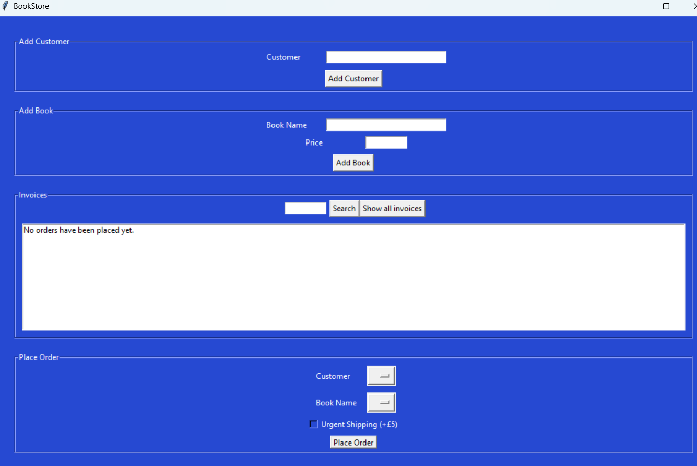
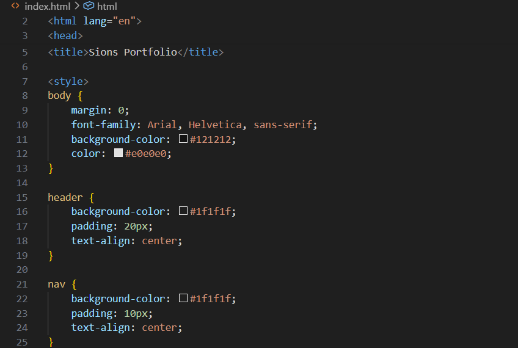
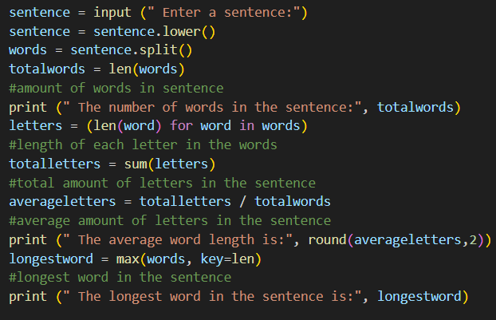

My Projects

Project 1
This project was a Python-built GUI application that allowed users to create a bookstore. It featured a user-friendly interface for adding, updating, and deleting book records, as well as generating sales reports. The application was built using Tkinter.

Project 2
This project involved creating a responsive website using HTML and CSS. I implemented a grid layout to showcase my work as you can see currently.

Project 3
This project was a small Python script that used specific code to allow users to input data and have it calculate results such as averages of words, word lengths, etc.